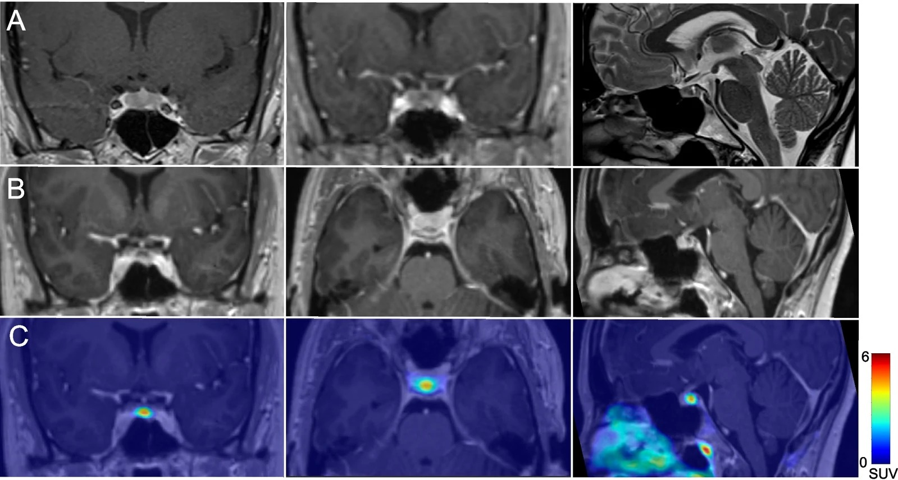
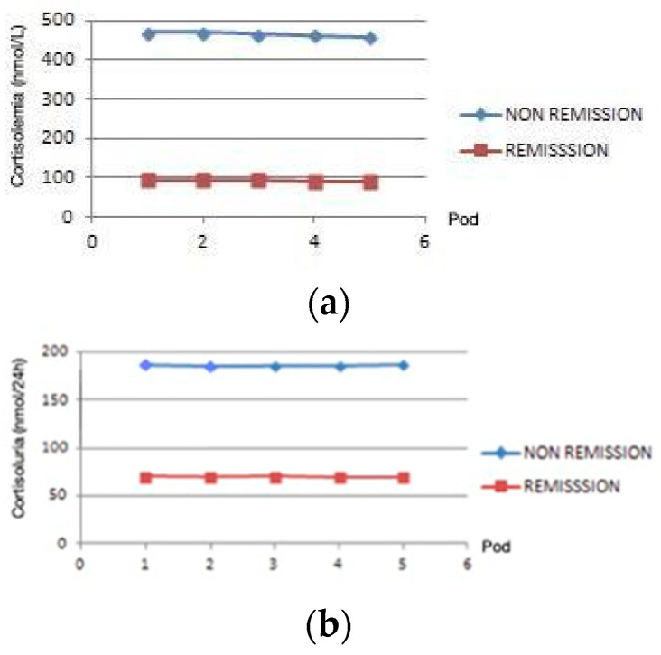
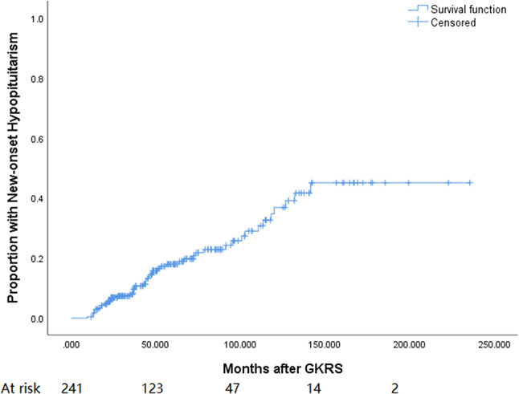

1748 — Cushing tái phát sau mổ xuyên bướm: cortisol ngày 1–3, MRI sau mổ đọc thế nào, và chọn mổ lại hay xạ phẫu
Tags: pattern:cushing pattern:tai-phat pattern:microadenoma-tuyen-yen vung:tuyen-yen vung:ho-yen protocol:MRI-3T-dong-hoc protocol:BIPSS score:cortisol-ngay-1-3
Mức chắc chắn (certainty): tổng hợp y văn (literature synthesis) — ghép đoàn hệ 50 ca mổ nội soi xuyên bướm (Medicina 2025, PMCID PMC12193485, CC BY), nghiên cứu tiến cứu 33 ca với cortisol ngày 1–5 (Healthcare 2024, PMCID PMC11430948, CC BY), 202 ca Cushing theo nguyên nhân (Front Endocrinol 2024, PMCID PMC10897300, CC BY), hồi phục chức năng thượng thận 174 ca (PMC12007880, CC BY-NC), suy tuyến yên sau xạ phẫu 241 ca (BMC Cancer 2024, PMCID PMC11301991, CC BY-NC-ND) và hình ảnh MRI động học u corticotroph (Rev Endocr Metab Disord 2026, PMCID PMC13616001, CC BY). Không có ca do nhóm tự chụp.
Kịch bản thực hành (ghép từ các đoàn hệ dưới đây, không phải ca nguyên văn): nữ 38 tuổi, Cushing do u tuyến yên đã mổ xuyên bướm 4 năm trước, cortisol hậu phẫu từng xuống 60 nmol/L và phải uống hydrocortisone 8 tháng; nay tăng cân lại, mặt tròn, huyết áp khó kiểm soát. Câu hỏi: có thật là tái phát không, đọc MRI sau mổ thế nào, và nếu tái phát thì mổ lại hay xạ phẫu? Bài chốt ba quyết định: (1) chẩn đoán tái phát bằng đường cong cortisol – không bằng một lần xét nghiệm: cortisol ngày 1–3 < 138 nmol/L là lui bệnh, > 500 nmol/L là còn bệnh, khoảng giữa phải chờ và lặp; (2) MRI sau mổ chỉ đáng tin từ 3 tháng vì mô sẹo và vật liệu cầm máu đều ngấm thuốc/tăng tín hiệu T1; (3) mổ lại khi thấy mảnh u còn lại còn tiếp cận được, xạ phẫu khi không thấy u hoặc u xâm lấn xoang hang — và phải tư vấn trước nguy cơ suy tuyến yên 20,7%. Nối 1696 – Bệnh Cushing do u tuyến yên, 1709 – ACTH lạc chỗ, 1700 – Cushing chu kỳ, 1710 – Đái tháo nhạt trung ương sau mổ tuyến yên.
1. Tổng quan bệnh học – cơ chế hình ảnh: vì sao "lui bệnh" và "khỏi" là hai chuyện khác nhau
- Tần suất tái phát (recurrence): khoảng một phần tư bệnh nhân Cushing đã lui bệnh sau mổ sẽ tái phát; trong đoàn hệ 202 ca Cushing nội sinh, tỉ lệ tái phát chung của u tuyến yên và u vỏ thượng thận là 25,7% (PMC10897300). Ở đoàn hệ tiến cứu 33 ca, lui bệnh sớm 81,2%, trong số lui bệnh sớm 92% duy trì lui bệnh và 7,7% tái phát trong 81,7 tháng (PMC11430948) — nghĩa là tỉ lệ tái phát phụ thuộc thời gian theo dõi, không phải một con số cố định.
- Ai dễ tái phát: u ≥ 1 cm (macroadenoma), xâm lấn xoang hang (Knosp cao, đặc biệt thành trong xoang hang), cortisol hậu phẫu không xuống thấp, tuổi < 50, bệnh cảnh chu kỳ, và mô học Crooke cell hoặc USP8 đột biến (PMC10897300, PMC12193485). Điểm chung: còn tế bào u — dù không thấy trên MRI.
- TẠI SAO cortisol hậu phẫu là xét nghiệm tốt nhất: trong Cushing, trục hạ đồi–yên–thượng thận bị ức chế kéo dài bởi cortisol ngoại sinh từ chính u; khi cắt hết u, tuyến yên bình thường chưa kịp hồi phục → cortisol máu tụt. Vì vậy cortisol sáng ngày 1–3 phản ánh mức độ cắt hết u, không phản ánh chức năng tuyến yên.
- Ngưỡng định lượng (bắt buộc thuộc):
- < 138 nmol/L (< 5 µg/dL) hoặc UFC < 28–56 nmol/24 h (< 10–20 µg/24 h) = lui bệnh theo hướng dẫn 2015 (PMC12193485).
- 135 nmol/L là điểm cắt tốt nhất trên đường cong ROC trong đoàn hệ 50 ca: độ nhạy 100%, độ đặc hiệu 94% (PMC12193485). Giá trị trung vị hậu phẫu: 57,6 nmol/L ở nhóm lui bệnh so với 449,5 nmol/L ở nhóm còn bệnh (p < 0,001).
- 270–500 nmol/L: vùng xám — không quyết định ngay, theo dõi và lặp xét nghiệm (PMC12193485).
- > 500 nmol/L (18 µg/dL): còn bệnh — khởi trị nội khoa, không chờ (PMC12193485).
- Cortisol hậu phẫu > 2,0 µg/dL (55 nmol/L) làm tăng gấp đôi nguy cơ tái phát so với < 2,5 µg/dL (PMC10897300) — đây là ngưỡng tiên lượng, khác ngưỡng chẩn đoán ở trên.
- TẠI SAO phải lấy máu TRƯỚC khi uống hydrocortisone: hydrocortisone là cortisol ngoại sinh, đo được trên xét nghiệm. Nếu đã uống, phải lấy máu ≥ 6 giờ sau liều (cách làm của PMC12193485), nếu không sẽ "lui bệnh giả" hoặc "còn bệnh giả" tùy thời điểm.
- TẠI SAO MRI ngay sau mổ lại khó đọc: hố yên sau mổ chứa máu, fibrin, vật liệu cầm máu (Surgicel/Gelfoam), mỡ tự thân — máu bán cấp và mỡ đều T1 tăng tín hiệu, còn mô sẹo ngấm thuốc trong 3–6 tháng. Vì vậy một "nốt ngấm thuốc" ở đáy hố yên tuần đầu không đồng nghĩa u còn; MRI nền (baseline) đúng là ở 3 tháng.
- TẠI SAO MRI động học (dynamic) lại hữu ích: adenoma corticotroph thường ngấm thuốc CHẬM hơn tuyến yên bình thường và thải thuốc chậm, nên trên chuỗi T1 động học (lát 2–3 mm, 8–10 thì sau tiêm) u hiện ra như ổ tăng tín hiệu MUỘN so với nhu mô tuyến — đúng hình "focus of delayed enhancement at the site of stalk insertion" (PMC13616001). Trên T2, u có thể giảm tín hiệu; trên T1 sau tiêm muộn, u bắt thuốc.
- TẠI SAO "không thấy u" vẫn có thể tái phát: khoảng 30% Cushing do tuyến yên có MRI không xác định được u, và tỉ lệ lui bệnh sau mổ cao hơn > 2,5 lần khi u nhìn thấy trước mổ (PMC12501498). Sau mổ, mảnh u nằm trong thành xoang hang có thể dưới 2 mm — dưới ngưỡng không gian của MRI 3T.
2. Mẫu hình + chẩn đoán phân biệt theo thời điểm và theo vị trí mảnh u
- Mẫu hình theo thời gian (timeline) — đây là cách phân biệt quan trọng nhất:
- Ngày 1–3: cortisol thấp (< 138 nmol/L) → **lui bệnh sớm**; **cao** (> 500) → còn bệnh (persistent); vùng xám → chờ.
- 4–6 tuần: cortisol vẫn thấp → củng cố lui bệnh; tăng dần → còn bệnh; bình thường/thấp–bình thường → làm UFC + cortisol nửa đêm nước bọt.
- 3–12 tháng: nếu đã từng thấp rồi tăng lại → tái phát (recurrence) — định nghĩa theo thời gian, không chỉ theo một giá trị.
- > 12 tháng: tái phát muộn, có thể nhiều năm sau mổ (đoàn hệ theo dõi 81,7 tháng, PMC11430948).
- Mẫu hình theo vị trí mảnh u còn lại:
- Đáy hố yên / quanh cuống yên: dễ tiếp cận qua đường xuyên bướm → mổ lại thuận lợi.
- Thành trong xoang hang (medial wall): vị trí hay sót nhất; mổ lại nguy cơ chảy máu và tổn thương dây thần kinh sọ, cần nội soi mở thành xoang hang ở trung tâm kinh nghiệm.
- Trên yên / quanh giao thoa thị: nguy cơ tổn thương thị giác, ưu tiên xạ phẫu nếu u nhỏ và cách giao thoa ≥ 3–5 mm.
- Xoang bướm / clivus: hiếm, dễ nhầm với mô sẹo hoặc niêm mạc viêm sau mổ.
- Gamut "tăng cortisol sau mổ" (không phải cứ tăng là tái phát):
- Còn bệnh (persistent) — cortisol không bao giờ xuống thấp.
- Tái phát (recurrence) — có giai đoạn lui bệnh rồi tăng lại.
- Cushing giả (pseudo-Cushing) — nghiện rượu, trầm cảm, béo phì, có bệnh cấp, cường estrogen.
- Do thuốc — hydrocortisone/glucocorticoid ngoại sinh, medroxyprogesterone, thuốc ức chế CYP3A4 làm tăng cortisol.
- ACTH lạc chỗ bị bỏ sót — nguồn ngoài sọ, thường ACTH rất cao + hạ kali (bài 1709).
- Hội chứng Nelson — sau cắt thượng thận hai bên, u yên to ra + ACTH tăng, cortisol thấp.
- Cushing chu kỳ — cortisol dao động theo chu kỳ, một lần bình thường không loại trừ (bài 1700).
3. Bảng so sánh phân biệt (ma trận đối chiếu)
| Thực thể (entity) | Hình ảnh / xét nghiệm điển hình | Chốt vào (rule-in) | Chốt loại (rule-out) | Gợi ý xác nhận |
|---|---|---|---|---|
| Tái phát thật | Cortisol từng < 138 nmol/L rồi tăng lại; MRI 3T động học thấy nốt ngấm muộn ở đáy hố yên/thành xoang hang | Đường cong cortisol có pha thấp rồi tăng + UFC/nước bọt tăng lại | Không loại trừ bằng MRI âm tính | Lặp UFC + cortisol nửa đêm; MRI 3T động học; BIPSS nếu MRI âm |
| Còn bệnh (persistent) | Cortisol ngày 1–3 > 500 nmol/L, không bao giờ thấp | Cortisol hậu phẫu cao ngay + UFC cao | Không có pha lui bệnh | Đo cortisol ngày 1–3 trước hydrocortisone; MRI sớm |
| Cushing giả | Cortisol tăng nhẹ, mất nhịp ngày đêm, ACTH bình thường/thấp | Bệnh cảnh (rượu, trầm cảm), test ức chế dexamethasone có đáp ứng một phần | UFC nửa đêm bình thường + không có tổn thương đích | Lâm sàng + xét nghiệm lặp sau can thiệp nguyên nhân |
| Do glucocorticoid ngoại sinh | Cortisol thấp, ACTH thấp, không có u | Tiền sử dùng thuốc (kể cả kem/thuốc xịt, medroxyprogesterone) | ACTH bị ức chế + cortisol thấp | Rà soát toàn bộ thuốc; ngừng thử |
| ACTH lạc chỗ | U phổi/tụy/tuyến ức; ACTH rất cao, hạ kali, u yên không có | BIPSS không có gradient trung ương + ổ u ngoài sọ | Có gradient trung ương rõ → loại trừ | CT ngực–bụng, BIPSS (bài 1709) |
| Nelson | Sau cắt thượng thận hai bên: u yên to ra, ACTH tăng, cortisol thấp | Tiền sử cắt thượng thận + ACTH tăng + u to | Cortisol cao → không phải Nelson | MRI yên định kỳ, ACTH |
- Ảnh minh họa MRI động học:
images/1748_cushing-tai-phat_MRI-dong-hoc_PMC13616001-F1.jpg— u corticotroph nhỏ với ổ ngấm thuốc muộn ở chỗ cuống yên bám trên T1 động học, kèm T2 và PET/MRI.
4. Protocol chụp + hệ phân độ/điểm chuẩn hóa
- Lấy máu hậu phẫu (protocol):
- Cortisol sáng ngày 1–3, lặp 6–8 giờ/lần nếu cần; lấy máu TRƯỚC liều hydrocortisone, hoặc ≥ 6 giờ sau liều (PMC12193485).
- UFC 24 giờ ngày 3–5; nếu vùng xám → lặp 4–6 tuần cùng cortisol nửa đêm nước bọt và test ức chế 1 mg dexamethasone.
- Đừng cắt hydrocortisone thay thế quá sớm: sau lui bệnh, trục thượng thận hồi phục chậm — 37,8% hồi phục ở 1 năm, 70,1% ở 2 năm, 81,1% ở 5 năm, trung vị 13,9 tháng (PMC12007880). Cortisol thấp kéo dài là sinh lý, không phải thất bại điều trị.
- MRI sau mổ (protocol):
- Máy 3T, T1 động học (tiêm 0,1 mmol/kg gadolinium, 8–10 thì, lát 2–3 mm), T2 coronal, T1 sau tiêm muộn fat-sat; đánh giá thành trong xoang hang và cuống yên.
- Thời điểm: 3 tháng làm nền; sau đó 6–12 tháng trong 2 năm đầu, rồi mỗi năm đến 5–10 năm (tái phát muộn).
- Không đọc MRI ngày 1–2 để kết luận còn u: máu, mỡ, vật liệu cầm máu đều gây dương tính giả.
- BIPSS lần hai (khi nào): chỉ khi MRI âm/không kết luận mà vẫn ACTH phụ thuộc và cần chứng minh nguồn trung ương trước mổ lại; ngưỡng IPS:P ≥ 2 trước, ≥ 3 sau kích thích và hạn chế định bên (xem chi tiết ở bài 1696). Sau mổ, dẫn lưu tĩnh mạch đã thay đổi, nên giá trị định vị thấp hơn lần đầu — không mổ chỉ dựa vào BIPSS khi MRI nói khác bên.
- Chọn mổ lại hay xạ phẫu:
flowchart TD
A[Cortisol ngay sau mổ] --> B{Ngày 1-3}
B -->|Dưới 138 nmol/L| C[Lui bệnh: theo dõi 3-6 tháng, MRI nền 3 tháng]
B -->|270-500 nmol/L| D[Vùng xám: lặp 4-6 tuần + UFC + nước bọt]
B -->|Trên 500 nmol/L| E[Còn bệnh: khởi trị nội khoa, chụp MRI 3T động học]
C --> F{Tăng cortisol lại?}
F -->|Không| G[Theo dõi mỗi 6-12 tháng đến 10 năm]
F -->|Có| H[Tái phát: xác nhận bằng UFC + nước bọt]
D --> H
E --> I{MRI thấy mảnh u tiếp cận được?}
H --> I
I -->|Có, trong hố yên hoặc đáy| J[Mổ lại xuyên bướm]
I -->|Không thấy, hoặc xâm lấn xoang hang| K[Xạ phẫu định vị]
I -->|Bệnh nặng, chờ tác dụng| L[Điều trị nội khoa cầu nối]
J --> M[Đánh giá lại cortisol ngày 1-3]
K --> N[Tư vấn suy tuyến yên 20,7 phần trăm]
- Số liệu để tư vấn xạ phẫu: trong 241 u tuyến yên được xạ phẫu dao gamma, 20,7% xuất hiện suy tuyến yên mới, trung vị 44,1 tháng; u ≥ 5 cm³ và u tiến triển làm tăng nguy cơ (PMC11301991). Vì vậy xạ phẫu không phải "lựa chọn nhẹ nhàng" — phải theo dõi hormon suốt đời.
5. Biến thể bình thường và cạm bẫy
- Cạm bẫy 1 — lấy máu sau khi đã uống hydrocortisone: cho cortisol "bình thường" giả tạo → tưởng còn bệnh, hoặc "lui bệnh" giả nếu lấy ngay sau liều. Luôn ghi giờ uống thuốc và lấy ≥ 6 giờ sau liều.
- Cạm bẫy 2 — gọi tái phát ở tuần thứ 6: cortisol có thể dao động vài tuần sau mổ; tái phát cần pha lui bệnh rồi tăng lại, không phải một lần cao.
- Cạm bẫy 3 — đọc MRI quá sớm: mô sẹo, mỡ tự thân, Surgicel đều T1 tăng tín hiệu/ngấm thuốc; MRI ngày 1 dễ "thấy u" ở mọi bệnh nhân. Nền đúng là 3 tháng.
- Cạm bẫy 4 — bỏ qua thai kỳ và estrogen: estrogen làm tăng CBG → cortisol toàn phần tăng; đọc cortisol tự do/nước bọt và so với ngưỡng theo thai kỳ.
- Cạm bẫy 5 — Cushing chu kỳ: xét nghiệm lúc "pha thấp" có thể bình thường hoàn toàn; nếu lâm sàng mạnh mà xét nghiệm âm, lặp nhiều lần (bài 1700).
- Cạm bẫy 6 — Nelson sau cắt thượng thận hai bên: cortisol thấp nhưng ACTH tăng và u yên to — không được gọi là "lui bệnh" rồi bỏ theo dõi MRI.
- Cạm bẫy 7 — u "im lặng" chuyển dạng: adenoma corticotroph im lặng có thể chuyển thành Cushing nhiều năm sau (PMC13627736) — bệnh nhân đã mổ u "không chức năng" mà tăng cortisol lại thì phải nghĩ đến điều này.
- Biến thể bình thường: tuyến yên "rỗng" một phần hoặc nốt tăng sản sau mổ có thể ngấm thuốc không đều — so sánh với MRI trước mổ và đường cong cortisol trước khi kết luận.
6. Tự lượng giá — Blind Quiz ngay trên trang tĩnh (không cần app)
Ca 1 — nữ 34 tuổi, Cushing chu kỳ, MRI thường quy âm tính

- Gợi ý lâm sàng: Cushing chu kỳ, MRI 3T thường quy không thấy u rõ; ACTH phụ thuộc.
- Câu hỏi: Chuỗi nào phát hiện u, và dấu hiệu nào trên ảnh nói rằng đó là u corticotroph chứ không phải nhu mô tuyến bình thường?
Bấm để hiện đáp án (findings + chẩn đoán)
- Dấu hiệu (findings): trên T1 động học có ổ ngấm thuốc MUỘN đúng chỗ cuống yên bám; trên T2 có ổ giảm tín hiệu; PET/MRI với [⁶⁸Ga]PentixaFor hội tụ về cùng vị trí.
- Chẩn đoán (diagnosis): u corticotroph nhỏ — adenoma ngấm thuốc chậm hơn nhu mô tuyến nên chỉ hiện ở thì muộn; đây là lý do MRI động học được chỉ định khi MRI thường quy âm tính.
- Nguồn ảnh: Rev Endocr Metab Disord 2026, PMCID PMC13616001, Fig. 1 — CC BY 4.0.
Ca 2 — bệnh nhân sau mổ xuyên bướm, theo dõi cortisol ngày 1–5

- Gợi ý lâm sàng: đo cortisol máu và UFC mỗi sáng từ ngày 1 đến ngày 5 sau mổ.
- Câu hỏi: Đường cong nào gợi ý lui bệnh, đường cong nào gợi ý còn bệnh? Vì sao không kết luận chỉ bằng ngày 1?
Bấm để hiện đáp án (findings + chẩn đoán)
- Dấu hiệu (findings): nhóm lui bệnh có cortisol giảm sâu và duy trì thấp (trung vị hậu phẫu 57,6 nmol/L); nhóm còn bệnh giữ cortisol quanh 450 nmol/L; UFC đi cùng chiều.
- Chẩn đoán (diagnosis): lui bệnh sớm khi cortisol < 138 nmol/L** và **giữ thấp**; **còn bệnh** khi **> 500 nmol/L; vùng 270–500 phải chờ và lặp.
- Phản biện (critique): có ca lui bệnh muộn (cortisol còn cao vài ngày đầu rồi mới giảm) — nên không mổ lại ngay chỉ vì ngày 1 cao.
- Nguồn ảnh: Healthcare 2024, PMCID PMC11430948, Figure 1 — CC BY 4.0.
Ca 3 — tư vấn trước xạ phẫu: cái giá phải trả

- Gợi ý lâm sàng: bệnh nhân tái phát, MRI không thấy mảnh u tiếp cận được, đang cân nhắc xạ phẫu.
- Câu hỏi: Nguy cơ suy tuyến yên mới là bao nhiêu và xuất hiện khi nào? Yếu tố nào làm tăng nguy cơ, và điều đó thay đổi lựa chọn thế nào?
Bấm để hiện đáp án (findings + chẩn đoán)
- Dấu hiệu (findings): 20,7% bệnh nhân có suy tuyến yên mới sau xạ phẫu, trung vị 44,1 tháng; đường cong tăng dần theo thời gian, không "phẳng" sau 2 năm.
- Chẩn đoán (diagnosis): xạ phẫu kiểm soát u nhưng đánh đổi bằng suy tuyến yên — phải theo dõi hormon suốt đời, và ưu tiên mổ lại khi mảnh u còn tiếp cận được.
- Nguồn ảnh: BMC Cancer 2024, PMCID PMC11301991, Fig. 1 — CC BY-NC-ND 4.0 (nguyên bản, không chỉnh sửa).
Bài liên quan chéo
- 1696 – Bệnh Cushing do u tuyến yên: MRI 3T động học, BIPSS
- 1709 – ACTH lạc chỗ
- 1700 – Cushing chu kỳ
- 1710 – Đái tháo nhạt trung ương sau mổ tuyến yên
- 1699 – Bệnh Cushing ở trẻ em
Ảnh
1748_cushing-tai-phat_MRI-dong-hoc_PMC13616001-F1.jpg— MRI động học u corticotroph (Rev Endocr Metab Disord 2026, PMC13616001, CC BY 4.0).1748_cushing-tai-phat_CortisolNgay1-5_PMC11430948-F1.jpg— cortisol/UFC ngày 1–5 sau mổ (Healthcare 2024, PMC11430948, CC BY 4.0).1748_cushing-tai-phat_KMSuyTuyenYen_PMC11301991-F1.jpg— Kaplan-Meier suy tuyến yên sau xạ phẫu (BMC Cancer 2024, PMC11301991, CC BY-NC-ND 4.0).- Nguồn + giấy phép từng ảnh:
images/CREDITS.md; link gốc:sources.md.
Không dùng để chẩn đoán độc lập khi chưa có người hướng dẫn.